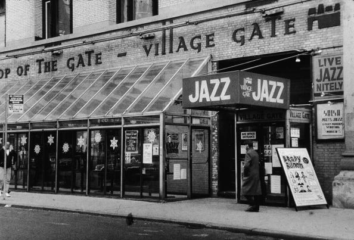

The Village Gate was a nightclub at the corner of Thompson and Bleecker Streets in Greenwich Village, New York. Art D'Lugoff opened the club in 1958, on the ground floor and basement of 158 Bleecker Street. In its heyday, the Village Gate also included an upper-story performance space, known as the Top of the Gate. Throughout its 38 years, the Village Gate featured such musicians as John Coltrane, Coleman Hawkins, Billie Holiday, Duke Ellington, Dizzy Gillespie, Bill Evans, Dave Brubeck, Dexter Gordon, Art Blakey, Woody Shaw, Miles Davis, Nina Simone, Herbie Mann, and Aretha Franklin, who made her first New York appearance there.